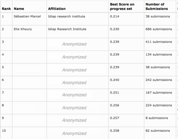

Idiap ranked 1st to the NIST i-Vector Challenge


On July 31 2014, the Idiap research institute was ranked 1st among 130+ participants to the NIST i-Vector Machine Learning challenge on Speaker Recognition ( https://ivectorchallenge.nist.gov).
Following its successful participation to the NIST Speaker Recognition Evaluation in 2012, the Biometric group ( http://www.idiap.ch/biometrics ) of the Idiap research institute participated to the i-vector challenge that started beginning of December 2013. This challenge relies on the i-vector paradigm, which is the current state-of-the-art front-end for speaker recognition systems.
In total, more than 9000 systems were submitted and evaluated by NIST. Preliminary results of this challenge were presented at the special session during "Odyssey 2014: The Speaker and Language Recognition Workshop" ( http://cs.uef.fi/odyssey2014/ ) that took place in June 2014.
Congratulations to all the Biometric group and in particular to Elie Khoury and Laurent El-Shafey.
Related papers:
A. Anjos, L. El Shafey, R. Wallace, M. Günther, C. McCool, and S. Marcel. Bob: a free signal processing and machine learning toolbox for researchers.
https://publidiap.idiap.ch/index.php/publications/show/2448
E. Khoury, L. El Shafey, M. Ferras, and S. Marcel. Hierarchical speaker clustering methods for the NIST i-vector challenge.
http://publications.idiap.ch/index.php/publications/show/2839
E. Khoury, L. El Shafey, and S. Marcel. SPEAR: An open source toolbox for speaker recognition based on bob.
http://publications.idiap.ch/index.php/publications/show/2807
Related software:
BOB: http://www.idiap.ch/software/bob/
SPEAR: https://pypi.python.org/pypi/bob.spear
Disclaimer from NIST:
“The leaderboard is intended as indication of how the participants are doing on this specific research evaluation. These results are not to be construed, or represented as endorsements of any participant's system or commercial product, or as official findings on the part of NIST or the U.S. Government. The data, protocols, and metrics employed in this evaluation were chosen to support this specific NIST i-vector machine learning challenge/research and should not be construed as indicating how well these systems would perform in applications. Because of the above reasons, this should not be interpreted as a product testing exercise and the results should not be used to make conclusions regarding which commercial products are best for a particular application.”
Thursday 31 July 2014
Idiap ranked 1st to the NIST i-Vector Challenge on Speaker Recognition
